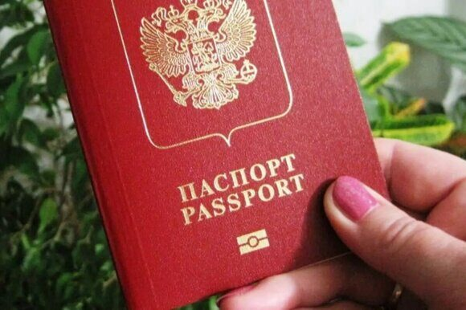

« НазадПреимущества биометрического загранпаспорта для современных туристов С каждым годом мир становится все более взаимосвязанным, и путешествия становятся неотъемлемой частью жизни многих людей. Однако, несмотря на удобство, с которым мы можем перемещаться по миру, безопасность и защита личных данных становятся все более актуальными вопросами. В этом контексте биометрический загранпаспорт представляет собой важный шаг вперед, предлагая ряд преимуществ для современных туристов. В этой статье мы рассмотрим, почему биометрический паспорт — это будущее путешествий, обсудим его преимущества и приведем примеры из жизни. Что такое биометрический загранпаспорт?Биометрический загранпаспорт — это заграничный паспорт, который содержит не только стандартную информацию о владельце, такую как имя, дата рождения и фотография, но и биометрические данные, такие как отпечатки пальцев и цифровое изображение лица. Эти данные хранятся в электронном чипе, встроенном в паспорт, что позволяет осуществлять автоматическую проверку личности на границах и в аэропортах. Преимущества биометрического загранпаспорта1. Упрощение процесса пограничного контроляОдним из самых значительных преимуществ биометрического паспорта является упрощение процесса прохождения пограничного контроля. С автоматическими системами проверки, работающими с биометрическими данными, путешественники могут проходить контроль быстрее и без лишних задержек. Например, в аэропортах многих стран уже установлены автоматы, которые считывают биометрические данные паспорта и сравнивают их с данными, хранящимися в базе данных. Это позволяет значительно сократить время ожидания в очередях. 2. Повышенная безопасностьБиометрические паспорта предлагают значительно более высокий уровень безопасности по сравнению с традиционными паспортами. Отпечатки пальцев и цифровое изображение лица являются уникальными для каждого человека, что делает подделку паспорта практически невозможной. В случае кражи паспорта мошенники не смогут использовать его без знания биометрических данных владельца. Это особенно важно в эпоху, когда киберпреступность и мошенничество становятся все более распространенными. 3. Защита личных данныхСовременные биометрические паспорта содержат встроенные функции защиты личных данных. Информация, хранящаяся на электронном чипе, зашифрована, что затрудняет доступ к ней посторонних лиц. Кроме того, биометрические данные могут использоваться только для целей идентификации и не могут быть переданы третьим лицам без согласия владельца. Это позволяет обеспечить большую конфиденциальность и защиту личной информации. 4. Удобство для часто путешествующихДля тех, кто часто путешествует, биометрический загранпаспорт становится настоящим спасением. С ним можно пройти пограничный контроль гораздо быстрее и с меньшими усилиями. Например, многие международные аэропорты уже внедрили специальные полосы для быстрого прохождения контроля для владельцев биометрических паспортов. Это позволяет избежать длинных очередей и сократить время, проведенное в аэропорту. 5. Признание в большинстве странБиометрические паспорта признаны на международном уровне, и большинство стран уже приняло или планирует принять такие документы. Это означает, что, имея биометрический загранпаспорт, вы сможете путешествовать в большее количество стран без необходимости получать отдельные визы или сталкиваться с дополнительными требованиями. Примеры из жизниРассмотрим несколько примеров, иллюстрирующих преимущества биометрического загранпаспорта. Пример 1: Быстрое прохождение контроляМария, активная путешественница, недавно получила биометрический загранпаспорт. На своем последнем путешествии в Европу она была приятно удивлена тем, как быстро она прошла пограничный контроль в аэропорту. Вместо того чтобы стоять в длинной очереди, она воспользовалась автоматом для проверки биометрических данных и прошла контроль за считанные минуты. Это позволило ей сэкономить время и быстро добраться до своего рейса. Пример 2: Защита от мошенничестваАлексей, который часто ездит в командировки, однажды столкнулся с проблемой кражи паспорта. Однако, поскольку его паспорт был биометрическим, он не переживал о том, что его данные могут быть использованы мошенниками. Он сразу же сообщил в полицию и заблокировал паспорт. Благодаря уникальным биометрическим данным, его паспорт не мог быть использован без его отпечатков пальцев. Советы и рекомендации1. Получите биометрический загранпаспорт заранее Если вы планируете путешествия за границу, рекомендуется получить биометрический загранпаспорт заранее. Процесс его получения может занять некоторое время, поэтому лучше не откладывать это на последний момент. 2. Ознакомьтесь с требованиями стран назначения Перед поездкой обязательно ознакомьтесь с требованиями стран, в которые вы собираетесь поехать. Некоторые страны могут иметь особые требования к биометрическим паспортам или могут потребовать визу, даже если у вас есть биометрический паспорт. 3. Защитите свои биометрические данные Хотя биометрические паспорта предоставляют высокий уровень безопасности, важно также проявлять осторожность и защищать свои биометрические данные. Не оставляйте паспорт без присмотра и сообщайте о его утере или краже как можно быстрее. 4. Пользуйтесь автоматами для проверки Если вы путешествуете через международные аэропорты, старайтесь использовать автоматы для проверки биометрических данных, если они доступны. Это значительно сэкономит ваше время и сделает процесс прохождения контроля более удобным. Как оформить биометрический загранпаспорт: Подробное руководствоРассмотрим процесс оформления биометрического загранпаспорта, включая все необходимые шаги и документы, а также процедуру снятия биометрических данных. Пошаговая инструкция по оформлению биометрического загранпаспортаШаг 1: Подготовка необходимых документовПеред тем как подать заявление на получение биометрического паспорта, необходимо подготовить следующие документы:
Шаг 2: Запись на приемДля подачи документов на получение биометрического паспорта необходимо записаться на прием в отделение УВМ МВД или многофункциональный центр (МФЦ). Это можно сделать:
Шаг 3: Подача документовНа приеме вам необходимо предоставить подготовленные документы. Сотрудник проверит их на соответствие требованиям и примет заявление. Важно помнить, что все документы должны быть оригиналами, а копии могут потребоваться только по запросу. Шаг 4: Снятие биометрических данныхПосле подачи заявления следуют процедуры снятия биометрических данных:
Шаг 5: Ожидание готовности паспортаПосле подачи заявления и снятия биометрических данных начинается процесс изготовления паспорта. Сроки его изготовления могут варьироваться в зависимости от региона и загруженности паспортного стола, обычно это занимает от 30 до 90 дней. Шаг 6: Получение паспортаКогда паспорт будет готов, вам придет уведомление о том, что его можно забрать. Для этого потребуется:
В некоторых случаях могут потребовать повторное подтверждение личности. Советы по оформлению биометрического загранпаспорта
Что делать, если паспорт не готов в срок?Если ваш паспорт не был готов в указанный срок, вы можете обратиться в отделение УВМ МВД или МФЦ, где подавали заявление. Вам должны предоставить информацию о причинах задержки. В некоторых случаях задержка может быть вызвана необходимостью дополнительной проверки данных. Список часто задаваемых вопросовЧто такое биометрический заграничный паспорт? Биометрический заграничный паспорт — это документ, который содержит не только стандартные данные о владельце, такие как имя, дата рождения и фотография, но и дополнительные биометрические данные, включая отпечатки пальцев и цифровое изображение лица. Эти данные хранятся в электронном чипе, встроенном в паспорт, что делает его более защищенным и трудно подделываемым. Каковы преимущества биометрического заграничного паспорта? Преимущества биометрического заграничного паспорта включают более высокий уровень безопасности, упрощение процесса прохождения пограничного контроля, защиту личных данных и признание в большинстве стран мира. Биометрические данные делают его практическим и надежным документом для международных путешествий. Каковы недостатки биометрического заграничного паспорта? Недостатки могут включать более высокую стоимость получения по сравнению с обычными паспортами, необходимость сбора биометрических данных и возможные проблемы с конфиденциальностью. Некоторые люди могут также беспокоиться о том, как хранятся и используются их биометрические данные. Как получить биометрический заграничный паспорт? Процедура получения биометрического заграничного паспорта включает несколько этапов: подготовка необходимых документов, подача заявления в отделение УВМ МВД или многофункциональный центр, снятие биометрических данных (фотография и отпечатки пальцев), ожидание изготовления паспорта и, наконец, его получение. Какие документы нужны для оформления биометрического заграничного паспорта? Для оформления биометрического заграничного паспорта вам потребуются следующие документы: заявление на получение паспорта, удостоверение личности (обычно внутренний паспорт), фотографии (по требованию), старый заграничный паспорт (если имеется) и квитанция об оплате государственной пошлины. Сколько времени занимает получение биометрического заграничного паспорта? Сроки изготовления биометрического паспорта могут варьироваться в зависимости от региона и загруженности паспортного стола. Обычно это занимает от 10 до 30 дней для обычного паспорта и до 5 дней для срочного. Как проходит процесс снятия биометрических данных? Процесс снятия биометрических данных включает в себя фотографирование и снятие отпечатков пальцев. Обычно это происходит в паспортном столе или многофункциональном центре с помощью специального оборудования. Вся процедура занимает всего несколько минут и является безболезненной. Можно ли получить биометрический заграничный паспорт другим способом, например, через интернет? На данный момент оформление биометрического заграничного паспорта полностью онлайн не доступно. Однако вы можете заполнить заявление и записаться на прием через интернет, используя портал Госуслуг, что значительно упростит процесс. Что делать, если я потерял свой биометрический заграничный паспорт? Если вы потеряли свой биометрический заграничный паспорт, вам необходимо немедленно сообщить об этом в паспортный стол или полицию. После этого вам потребуется подать заявление на получение нового паспорта и предоставить необходимые документы. Как проверить статус заявки на получение биометрического заграничного паспорта? Вы можете проверить статус вашей заявки через портал Госуслуг или обратиться в паспортный стол, где вы подавали документы. Обычно информация о готовности паспорта доступна через несколько дней после подачи заявления. Есть ли возрастные ограничения для получения биометрического заграничного паспорта? Биометрический заграничный паспорт может быть оформлен для граждан любого возраста, включая детей. Однако для детей до 14 лет требуется согласие обоих родителей или опекунов, а для оформления паспорта понадобятся дополнительные документы. Какова стоимость биометрического заграничного паспорта? Стоимость получения биометрического заграничного паспорта может варьироваться в зависимости от региона и типа паспорта (обычный или срочный). Обычно она составляет от 3 000 до 6 000 рублей, но рекомендуется уточнять информацию в местном паспортном столе. Можно ли использовать биометрический заграничный паспорт для поездок по странам СНГ? Да, биометрический заграничный паспорт может использоваться для поездок в страны СНГ, однако рекомендуется заранее ознакомиться с визовыми требованиями и условиями въезда в каждую конкретную страну. Нужно ли повторно подавать заявление на биометрический заграничный паспорт, если у меня уже есть старый? Если у вас уже есть старый заграничный паспорт, вам не нужно повторно подавать заявление. Однако для получения нового биометрического паспорта необходимо подать новое заявление и предоставить имеющийся паспорт как один из документов. Можно ли получить биометрический заграничный паспорт срочно? Да, существует возможность получения биометрического заграничного паспорта в срочном порядке. Для этого потребуется подать соответствующее заявление и оплатить дополнительную пошлину. Срок изготовления паспорта в этом случае обычно составляет до 5 дней. Как влияет наличие биометрического паспорта на процесс пересечения границы? Наличие биометрического паспорта значительно упрощает процесс пересечения границы. Многие страны используют автоматизированные системы проверки, которые позволяют быстрее проходить контроль, так как биометрические данные считываются автоматически. Как долго действителен биометрический заграничный паспорт? Срок действия биометрического заграничного паспорта составляет 10 лет для людей всех возрастов. По истечении этого срока паспорт необходимо будет продлить или получить новый. Что происходит с биометрическими данными после оформления паспорта? Биометрические данные, собранные для оформления паспорта, хранятся в защищенной базе данных, доступ к которой ограничен. Использование и передача этих данных регулируются законодательством о защите персональных данных, что обеспечивает их безопасность. Каковы риски использования биометрических паспортов? Риски, связанные с использованием биометрических паспортов, могут включать потенциальные угрозы конфиденциальности и безопасности данных. Если данные были бы украдены или использованы неправомерно, это может привести к серьезным последствиям. Однако современные технологии и законодательство направлены на защиту личной информации. Какие страны принимают биометрические заграничные паспорта? Биометрические заграничные паспорта признаются и принимаются большинством стран мира. Многие государства уже перешли на биометрические паспорта, что упрощает международные поездки и делает процесс въезда более безопасным. Как часто нужно обновлять биометрический заграничный паспорт? Обновлять биометрический заграничный паспорт необходимо по истечении его срока действия. Также рекомендуется обновить паспорт в случае изменения внешности (например, если вы сильно изменили свою прическу или лицо) или изменения личной информации, такой как фамилия. ЗаключениеБиометрический загранпаспорт — это не просто новый документ, это важный шаг в сторону повышения безопасности и удобства для современных путешественников. Его преимущества, такие как упрощение процесса пограничного контроля, повышенная безопасность и защита личных данных, делают его незаменимым инструментом для тех, кто хочет путешествовать по миру с уверенностью. В условиях глобализации и роста международных поездок биометрический паспорт становится будущим путешествий, открывающим новые горизонты и возможности для туристов. Срочное оформление биометрического заграничного паспорта в паспортно-визовом центре «Север»В нашем паспортно-визовом центре «Север» мы предлагаем услугу срочного оформления биометрического заграничного паспорта для тех, кто ценит свое время и планирует поездку в кратчайшие сроки. С нами вы сможете получить паспорт, соответствующий самым современным требованиям безопасности, всего за несколько дней! Почему выбирают нас?
Как быстро оформить биометрический заграничный паспорт?
Не откладывайте свои планы на потом! Обратитесь в паспортно-визовый центр «Север» и получите свой биометрический заграничный паспорт в кратчайшие сроки. Мы готовы помочь вам сделать ваши путешествия комфортными и безопасными |
Комментарии
Комментариев пока нет